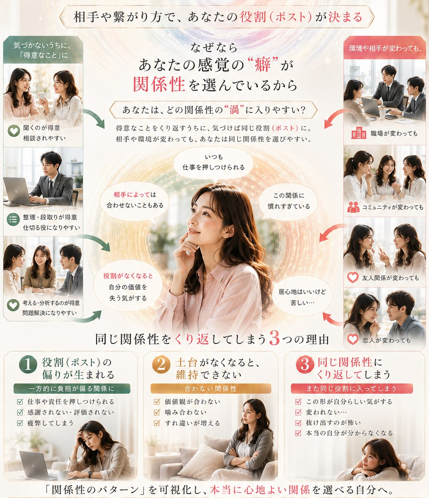

back to top
ここまで読んだあなたなら

ここまで読んだあなたなら
もう「何を求めているのか」を
言葉にできるはずです。
あとは、あなたの現在地——ブランディングスコアを、確かめてください。
美脳のLINE無料登録はコチラ →事前の信念
感情
インセンティブ
主体性
好奇心
心の状態
他人の目
曖昧な言葉、素っ気ない態度、はっきりしない相手の反応——意味が定まっていない出来事に出会うと、脳は放置できません。記憶を検索して、別の機会で起きたことを、そのまま今に流し込みます。この、脳が勝手に下す意味づけ・決めつけのことを、ここでは「解釈」と呼びます。
その結果、あなたが反応しているのは、相手の言葉ではなく、別の機会に起きたことかもしれません。一つひとつは正常な機能です。でも7つが同時に働き続けると、あるストーリーが出来上がります。そして一度出来上がったストーリーは、「事実」として体験されるようになります。
AIにできないもの、それが「創造」です。まだ形になっていないものを、楽しみながら、自分達の手で組み立てられる素養があるか。正解を選ぶチカラより、複数の正解を持てるチカラが役立ちます。
だからこそ、現在地を知る必要がある。
美脳は、あなたが描く軌道を地図として拡げる場所です。
用途——現在地の測定は、関係性が発生するあらゆる場面で使えます。
恋愛初期の高揚感は、時間が経てば自然に落ち着いていくのが本来の流れです。落ち着いたあとに残る安心感や信頼感こそが、長く続く関係の土台になります。ところが、その落ち着きを「冷めた」「もう好きじゃないのかも」と決めつけてしまうと、そこから先は違う動きが始まります。相手の些細な態度に、いちいち意味を探しにいく。確認しないと不安が収まらない。「この人じゃなきゃ無理」という言葉が増えていく。これは感情が壊れているのではなく、一つのストーリー(見捨てられるかもしれない)が出来上がり、すべての出来事がそのストーリーで処理されている状態です。
SNSやスマホを見る時間が長くなるほど、脳は休む間もなく情報を検索し続けます。仕事も人付き合いも表面上は問題なくこなせているのに、良いことがあっても実感が湧きにくく、小さな引っかかりだけが頭から離れない——いわゆる「ステルス鬱」と呼ばれる状態も、構造は同じです。脳は本来、危険な情報を優先して検索するようにできているため、一度この検索パターンが固定されると、本人の性格や気持ちの強さとは関係なく、「良いことはスルーされ、悪いことだけが増幅される」状態が続いてしまいます。
感情をうまく言葉にできないだけなのに、それを「発達障害かもしれない」と自分でそう決めつけてしまう大人が、いま増えています。SNSやAI時代では、「俯瞰」がひとつのキーワードです。相手の視点(youフォーカス)に立てず、自分の視点(meフォーカス)で止まっていることに、本人がまだ気づいていないだけかもしれません。それを障害だと決めつけてしまうこと自体が、本当の課題から目をそらすリスクになります。「感情と感覚の再学習」が、新時代のリテラシーです。
ストーリーを重ねると・・・
固定されたストーリーは、自分では気づけません。でもその代わりに、人間関係のパターンとして、外側に可視化されます。同じタイプの人を好きになる。同じ理由でケンカする。同じ場面で、同じ言葉に傷つく。繰り返されるパターンこそが、固定されたストーリーの輪郭です。「縁起とフラクタル セッション」は、そのパターンに触れる、最初の入口になります。
こんなことはありませんか？
「離れる自由」はある。でも「見極める」技術を、これまで教わってこなかっただけ。相手が変わろうとしているのか、ただ変わる気がないだけなのか——この違いを見分ける物差しを、持たされてこなかっただけ。
ここ数年のトレンドで、親や愛着の問題に帰結することに違和感を感じているなら——あなたは「再び大人になる」自由を、持っているのかもしれません。
経済的に困っていない。仕事もある。今すぐ一人になっても、生活は崩れない。それでも、同じような相手、同じようなすれ違いを、また繰り返してしまう。
自立して他責にしない人ほど、「私の忍耐が足りないのかも」「私がもっと理解すれば」と、判断を自分の内側に持ち帰り続けてしまう。選べる状態にあるのに、選べない状態にいる人と同じところで、足踏みが続きます。
自分を疑うべき場面で、相手のせいにして関係を切ってしまう。相手を見極めるべき場面で、自分を責めて消耗し続ける。変わるべきは自分か、離れるべきは相手か——それが、はっきり分かるようになると、分けて見られるようになると、迷う時間そのものがなくなります。
我慢ができる、自己犠牲ができる
——それが「これまでの大人」。
あなたには今ここから
「大人像」を選び直す自由があります。
ここでは、縁の起こりが自己相似的にフラクタル増幅するという関係性モデルを用います。
無意識の思い込みによるスコトーマ(盲点)は、自己相似のまま他者相似としてフラクタルに増殖します。その連鎖に気づき、断ち切るタイミングを選ぶことができます。
専門ガイドがスコトーマを外すことで自己効力感が上がり、自己実現のスピードが上がります。予測範囲の外にゴールを置く伴走を、個別セッションで行います。
過去の出来事は未来に1ミクロンも関係ない。エフィカシーを軸に、環境のチカラをかりて「成長」そのものを飛躍させます。
あなたの脳が、現実をどう受け取るかが変わります。
レジリエンスの温室
あとは、あなたの現在地——ブランディングスコアを、確かめてください。
美脳のLINE無料登録はコチラ →